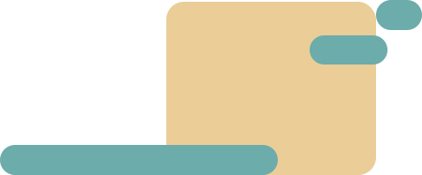
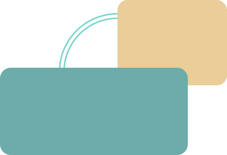
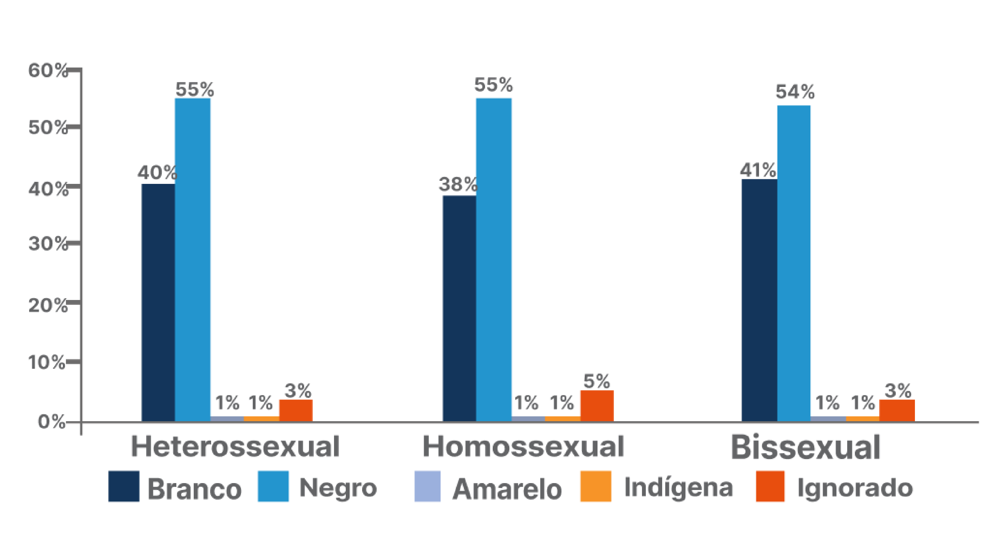
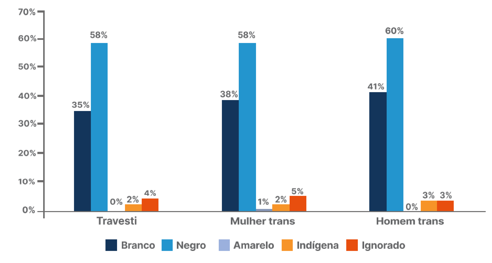

SOBRE AS AUTORAS
Cristiane de Freitas Cunha Grillo
Graduação em Medicina pela Universidade Federal de Minas Gerais (1989), Mestrado (1996) e Doutorado (2002) em Saúde da Criança e do Adolescente pela Universidade Federal de Minas Gerais e Pós-Doutorado pelo Hospital Clínic da Universidade de Barcelona (2004) e pela Universidade Paris 8 Vincennes e Saint Denis (2021). Professora Titular do Departamento de Pediatria da Faculdade de Medicina da UFMG. Coordenadora dos Programas de Extensão Janela da Escuta e Brota: Juventude, Educação e Cultura. Presidente do Departamento de Adolescência da Sociedade Mineira de Pediatria. Membro da Escola Brasileira de Psicanálise e da Associação Mundial de Psicanálise. Coordenadora do Observatório de Gênero, Biopolítica e Transexualidade da Federação Americana de Psicanálise da Orientação Lacaniana (FAPOL).
Carmen Maria Raymundo
Graduação em Serviço Social pela Universidade Federal do Rio de Janeiro (1986), Mestrado em Serviço Social pela Universidade do Estado do Rio de Janeiro (2002), Especialização em História da África e do Negro no Brasil pela Universidade Cândido Mendes (2007) e Especialização em Gênero, Etnia, Sexualidade e Direitos Humanos pela Fiocruz (2017). Desde o ano de 1994 é Assistente Social da Universidade do Estado do Rio de Janeiro e Coordenadora do Programa de Saúde do Trabalhador Adolescente, do Núcleo de Estudos da Saúde do Adolescente, da Universidade do Estado do Rio de Janeiro. Participou de cooperação técnica para estruturação das primeiras ações de Saúde do Trabalhador, do Ministério da Saúde, para eliminação do trabalho infantil e proteção do trabalhador adolescente (2003 a 2009). Participou da cooperação técnica ao Programa Caminho Melhor Jovem, da Secretaria de Estado de Esportes, Lazer e Juventude (2013 a 2016) e coordenou oficinas com jovens dos territórios de favelas, com Unidades de Polícia Pacificadora, contemplados pelo programa. Tem autoria em Módulos de autoaprendizagem para formação de equipes multidisciplinares nas áreas de trabalho infantojuvenil e saúde e interculturalidade, gênero e saúde de adolescentes e jovens. Tem autoria no curso Juventudes e Participação Social da Universidade Aberta para o SUS (UNA-SUS). Atualmente realiza as seguintes funções: 1) Coordenadora do Projeto Caminhos Abertos – Diálogos interseccionais entre raça, religiosidade e saúde infantojuvenil realizado pelo NESA em parceria com a Secretaria de Promoção da Igualdade Racial (SEPPIR) e Programa das Nações Unidas para o Desenvolvimento (PNUD). 2) Coordenadora Pedagógica na formação em Saúde do Adolescente promovido pelo Núcleo de Estudos da Saúde do Adolescente em parceria com o Departamento de Gestão Socioeducativa.
Luiza Buzgaib Martins
Assistente Social graduada pela Universidade Federal Fluminense. Especialista em Serviço Social e Saúde pela Universidade do Estado do Rio de Janeiro, com ênfase em Saúde do Adolescente pelo Núcleo de Estudos da Saúde do Adolescente. Atualmente é Coordenadora de Eixo na formação em Saúde do Adolescente promovido pelo Núcleo de Estudos da Saúde do Adolescente em parceria com o Departamento de Gestão Socioeducativa. Compõe a Equipe Técnica do Projeto Caminhos Abertos – Diálogos interseccionais entre raça, religiosidade e saúde infantojuvenil, também executado pelo NESA em parceria com a Secretaria de Promoção da Igualdade Racial (SEPPIR) e Programa das Nações Unidas para o Desenvolvimento (PNUD). Ademais, é Assistente Social do Projeto Identidade – ambulatório de transdiversidades do Hospital Universitário Pedro Ernesto.
Módulo: Adolescências e juventudes na contemporaneidade: diferentes perspectivas, diversidades, aspectos étnicos e culturais

SOBRE O MÓDULO
Adolescências e juventudes na contemporaneidade: diferentes perspectivas, diversidades, aspectos étnicos e culturais
Carga horaria: 30 horas
OBJETIVO DE APRENDIZAGEM
Proporcionar um panorama geral dos principais aspectos da saúde mental e atenção psicossocial de adolescentes e jovens, ressaltando a importância de avaliar o contexto sociopolítico-cultural e do lugar de fala do adolescente/jovem.
Conteúdo
- Processo de transição do ser adolescente: transformações físicas, emocionais, cognitivas, sociais;
- Adolescências e juventudes em diferentes cores, etnias, contextos, regiões e religiões no Brasil; Pessoa adolescente com deficiência;
- Adolescências e a perspectiva de gênero; Adolescência/juventude e sexualidade: relações afetivas, gravidez na adolescência;
- Adolescência/juventudes e relações familiares: diálogo intergeracional e gerenciamento de conflitos familiares.
Conhecimentos
- Reconhecer a adolescência como um processo de transição em diferentes aspectos;
- Identificar as adolescências e juventudes em diferentes cores, etnias, contextos e regiões e religiões do Brasil;
- Reconhecer as singularidades das subjetividades negras, identificando traumas e vivências atreladas à cor da pele nas adolescências;
- Conhecer as adolescências indígenas (cultura e hábitos);
- Discutir a importância da abordagem sobre gênero e identidade de gênero na adolescência;
- Compreender a sexualidade na adolescência: fatores culturais, familiares e sofrimento emocional;
- Conhecer os aspectos envolvidos na gravidez precoce;
- Compreender as relações familiares como importante vetor na saúde mental dos adolescentes/jovens.
Habilidades
- Realizar o (tele) atendimento a adolescentes e jovens no Brasil, conforme as necessidades individuais apresentadas;
- Estimular a comunicação, o intercâmbio de vivências e as experiências entre as gerações;
- Incentivar a transmissão de saberes por meio do diálogo e das diferentes formas de expressão entre as gerações.

Apresentação do Módulo
As adolescências e as juventudes brasileiras vêm conquistando um novo olhar nas últimas décadas. A Constituição de 1988, o Estatuto da Criança e do Adolescente (BRASIL, 1990), o Estatuto da Juventude (BRASIL, 2013) e a definição dos instrumentos legais de proteção a essa população representam grandes avanços para o reconhecimento e a garantia dos direitos juvenis. Indicam a necessidade de compreensão das diversidades desses grupos populacionais e a criação de condições necessárias para a plena realização de suas potencialidades. Neste módulo, abordaremos alguns dos principais temas que envolvem as juventudes contemporâneas e que deverão ser considerados pelas equipes multidisciplinares nas intervenções realizadas em muitos contextos por diferenciados setores. Convidamos você a conhecer as histórias de três jovens moradores de um mesmo território e protagonistas de diferentes trajetórias. Por meio dessas narrativas, reafirmamos o entendimento das adolescências e das juventudes como processos complexos, plurais e heterogêneos de emancipação. A pluralidade do conceito de adolescência abrange as peculiaridades existentes nas várias regiões do país, nos territórios rurais e urbanos, assim como nos diferentes gêneros, raças, etnias e classes sociais.
De acordo com Novaes (2007), os modos de vida proporcionados à juventude em nossa sociedade criam o pano de fundo que influencia a adoção de suas práticas cotidianas. Se pensarmos nos jovens do século XXI, podemos constatar que eles vivem em um mundo globalizado, mas com profundas desigualdades sociais. Conforme vimos no caso complexo, a condição juvenil pode ser vivida de forma desigual e diversa, ainda que em um mesmo território, devido a diferenças de raça, etnia, gênero, orientação sexual, inserção no mercado de trabalho, configurações familiares etc.
Nesse contexto, existem situações diferenciadas de vulnerabilidade juvenil. Não podemos, portanto, homogeneizar a categoria juventude. Em cada tempo e lugar, fatores históricos, estruturais e conjunturais determinam as vulnerabilidades e as potencialidades das juventudes.
Assim, é fundamental refletir sobre questões ligadas às novas configurações familiares, às identidades de gênero e orientações sexuais, às violências, à desigualdade de direitos e oportunidades, à gravidez na adolescência, ao trabalho, entre tantos outros aspectos.
Você considera possível pensar em um único jeito de ser adolescente?
Falamos em adolescências e juventudes no plural por considerarmos a diversidade dessas experiências no Brasil. Se a puberdade é um fenômeno biológico e universal, as adolescências e juventudes são experiências sócio e culturalmente construídas. O que você pensa sobre ser adolescente e jovem em uma cidade grande, em um município pequeno, na zona rural, nas comunidades indígenas, quilombolas etc.? Você conhece adolescentes e jovens que vivem essas experiências diversas?
Neste módulo, falaremos também da puberdade, que invade o corpo da criança, provocando às vezes um sentimento de estranheza. O conceito de puberdade está ligado às modificações hormonais que podem começar a partir dos oito anos nas meninas e nove anos nos meninos e provocam aumento das mamas, dos pelos, dos testículos e do pênis. Nessa fase, o crescimento acelera – é o que chamamos estirão da puberdade.
Nesse momento, ocorre, também, um intenso processo de maturação cerebral. Até o século passado, acreditava-se que o cérebro finalizasse seu processo de desenvolvimento aos 10 anos de idade. Hoje, sabemos que isso acontece além do período definido como adolescência, especialmente a possibilidade de controlar os impulsos e de planejar decisões.
Saiba mais
Despertou seu interesse em conhecer mais sobre a puberdade?
Esse e-book trata da saúde de adolescentes e aprofunda as questões sobre puberdade e adolescência. Siga explorando o tema Saúde do adolescente, clicando no documento:
Iremos abordar também as adolescências e juventudes, sempre no plural, porque são muitas experiências e muito diversas. Raça, etnia, gênero, orientação sexual, território etc. marcam profundamente cada adolescência e juventude.
Para falar de adolescentes e jovens, é fundamental falar das famílias e dos territórios. Vamos indicar algumas leituras, filmes, músicas, entre outros materiais, ok? Veja na lista de referências o que você vai ler, ver ou ouvir!
Vamos pensar em quantas famílias diferentes umas das outras você conhece? E em quantos lugares e modos de viver existem?
Agora que você já conhece os rumos da nossa prosa, fica uma dica: cada adolescente ou jovem é único! As receitas prontas não dão conta da singularidade das pessoas. Por esse motivo, nossa proposta é de conversarmos e trocarmos ideias, não fornecer um guia de como você deverá atuar.
Estamos juntos aprendendo a melhor forma de nos aproximarmos dos adolescentes e jovens. Você concorda que, na hora de “se abrir”, é necessário escolher bem com quem falar?
Sabemos da importância de uma escuta atenta, interessada e desprovida de preconceitos. A lealdade e a possibilidade de compartilhar segredos e dúvidas são fundamentais. Nas sociedades contemporâneas, as pessoas experimentam novas formas de relacionamento por meio das redes sociais e de outras tecnologias de comunicação, tanto no mundo real como no virtual. Estar junto dos adolescentes e dos jovens é reconhecer o potencial criativo e a pujança de vida e, acima de tudo, não menosprezar as questões que os preocupam e que lhes trazem sofrimento.
CONCEITUANDO ADOLESCÊNCIAS E JUVENTUDES
CONCEITUANDO ADOLESCÊNCIAS E JUVENTUDES
Por falar em adolescentes e jovens, que tal conceituarmos ADOLESCÊNCIA e JUVENTUDE?
Segundo a Organização Mundial da Saúde (OMS, 2007), a adolescência vai dos 10 aos 20 anos incompletos. Já no Estatuto da Criança e do Adolescente (ECA), Lei n. 8069, de 1990, ela inicia aos 12 e termina aos 18 anos. Pelo Código Civil Brasileiro, atinge-se a maioridade aos 18 anos, entretanto é permitido votar a partir dos 16 anos.
Na atualidade, o Estatuto da Juventude (BRASIL, 2013) oficializou a juventude como categoria que congrega pessoas com idades entre 15 e 29 anos. A Política Nacional de Juventude (BRASIL, 2006) considera adolescentes-jovens pessoas entre 15 e 17 anos, jovens-jovens as pessoas que estão entre 18 e 24 anos e jovens-adultos as que estão entre 25 e 29 anos. Existem diferentes definições de adolescência e juventude, mas é importante ressaltar que o entendimento da adolescência enquanto um período particular da vida, situado entre a infância e a vida adulta, é recente na história da humanidade.
O conceito de adolescência é cultural, pois a forma como cada sociedade interage com os jovens é particular e está inserida em contextos socioculturais e históricos. Nesse sentido, é importante lembrar que a categoria adolescência emerge no século XIX, quando há uma importante mudança na sociedade: a passagem de uma experiência coletiva para o fortalecimento do espaço privado e da família. Esse movimento inspirou a necessidade de proteger as crianças e os jovens e deu destaque aos colégios como instituições essenciais da sociedade. Crianças e adolescentes passaram a frequentar as escolas, destinadas a indivíduos de 10 a 25 anos, sob a influência de especialistas adultos e práticas pedagógicas que enfatizavam a formação moral, religiosa e intelectual.
Esse grupo populacional apresenta um padrão de morbimortalidade – isto é, de adoecimento e morte – com características específicas. Apesar das diferenças observáveis entre os diversos países, entre as Regiões do Brasil, estados, municípios e suas culturas locais, podemos dizer que, em linhas gerais, os jovens adoecem e morrem por causas externas e evitáveis. Será que nossos serviços têm atentado para essa particularidade? Se sim, como alcançar a juventude com vistas à prevenção desses agravos e promoção de suas condições de vida?
Você já havia pensado sobre isso? Em seu cotidiano, você conhece jovens que adoeceram ou morreram devido a causas externas¹ (acidente, homicídio, suicídio, enchente, afogamento, envenenamento etc.)? Você já participou de algum movimento organizado para a promoção da saúde e prevenção de agravos?
Ainda sobre as causas externas de mortalidade entre os jovens, os acidentes de trânsito relacionados com o trabalho têm, atualmente, uma taxa alta de ocorrência. Você já pensou na relação entre trabalho e acidentes de trânsito? É sobre o que vamos conversar a seguir.
TRABALHO E JUVENTUDES
TRABALHO E JUVENTUDES
Já reparou como na paisagem contemporânea tem sido muito comum nos depararmos com adolescentes e jovens em motocicletas, bicicletas e até mesmo a pé carregando mochilas de entrega? Na verdade, ainda conhecemos pouco seus cotidianos de trabalho, possíveis situações de risco à saúde e, em especial, de que forma interpretam o trabalho e a si mesmos como trabalhadores. Com relação especificamente às práticas discriminatórias que têm como base o racismo, a médica Jurema Werneck, ativista do movimento de mulheres negras e doutora em Comunicação e Cultura, alerta-nos que, no nosso país, elas se manifestam de forma institucional, seja na forma de exclusão, prioridades ou metas de realização das diversas instituições sociais, nas áreas da educação, do mercado de , da política, da segurança pública, da esfera privada e, também, da saúde. Vamos discutir mais sobre o racismo! Você conhece os dados sobre violência contra jovens negros no Brasil? Na verdade, ainda conhecemos pouco seus cotidianos de , possíveis situações de risco à saúde e, em especial, de que forma interpretam o trabalho e a si mesmos como trabalhadores.
De acordo com Novaes (2007), ser jovem é viver uma contraditória convivência entre as normas e valores familiares e sociais e, ao mesmo tempo, grandes expectativas de emancipação. Os jovens do século XXI vivem uma experiência geracional em comum e historicamente inédita: a aceleração da globalização e o agravamento das desigualdades. Assim, as características do tempo contemporâneo compreendem: as mudanças tecnológicas do mundo do trabalho (mutante e restrito), maior violência simbólica e física, além da evidência dos riscos ecológicos. Esses marcadores relacionam-se com a vivência contemporânea juvenil, caracterizada por múltiplas entradas e saídas do mundo do trabalho e da escola.
Temos uma juventude com escolaridade cada vez maior em relação às gerações anteriores, mas, por outro lado, o mundo do trabalho não tem correspondido a esse novo patamar de escolaridade. Isso tem gerado entre os jovens o medo “de sobrar”.
Esse contexto tem significado, sobretudo, para jovens das camadas populares, jovens negros, jovens LGBTQIA+ e mulheres, que habitualmente se inserem precocemente no mundo do trabalho informal e sem garantia de direitos.
Conforme vimos nas histórias de José Ribamar e de seus amigos, apesar de a Lei nº 12.009 (BRASIL, 2009) regulamentar serviços como mototaxista e motoboy, sabemos, pelo Ministério da Saúde (GIANNINI, 2018), que os motoboys são os que mais sofrem acidentes. Porém, esses acidentes, que por vezes trazem consequências sérias, não são considerados acidentes de trabalho, e sim acidentes de trânsito. Esse fato mascara quanto as formas de trabalho contemporâneas podem representar riscos à saúde juvenil, assim como a ausência de direitos trabalhistas e previdenciários (RAYMUNDO; VEIGA, 2013). Orientações importantes sobre essa temática podem ser encontradas no Módulo de autoaprendizagem sobre Saúde e Segurança no trabalho Infantil e Juvenil, organizado pela Organização Internacional do Trabalho (2007).
Saiba mais
Vamos ver um curta que aborda o cotidiano, as dificuldades, os medos e os sonhos de motoboys que circulam na cidade de São Paulo? Assista ao vídeo:
Nele é possível identificar alguns problemas apresentados em nosso caso de estudo: os acidentes, a ausência de direitos, a violência a que estão submetidos e o preconceito.
Os acidentes de trabalho não são as únicas causas externas de morbimortalidade entre os jovens. Há também uma preocupação muito elevada com a violência, assunto que merece nossa atenção e que iremos agora saber um pouco mais!
E QUANDO A VIOLÊNCIA VEM DE ONDE ESPERAMOS PROTEÇÃO?
E QUANDO A VIOLÊNCIA VEM DE ONDE ESPERAMOS PROTEÇÃO?
Nos relatos dos jovens, também chamaram a atenção alguns episódios de violência perpetrados por agentes públicos. Você sabia que existe um conceito para nomear essas situações?
Estamos falando da violência institucional, que pode ser observada nas práticas discriminatórias em razão de diferenças de território, gênero, raça, etnia, orientação sexual e religião, que são terreno fértil para a ocorrência desse tipo de violência.
A violência institucional é aquela praticada pela ação e/ou pela omissão das instituições prestadoras de serviços públicos, como hospitais, postos de saúde, escolas, delegacias, Judiciário, entre outras, no exercício de suas funções. É perpetrada por agentes que deveriam garantir atenção humanizada, preventiva e reparadora de danos.
Zizek, um intelectual da Eslovênia, em seu livro Violência (2014), propõe uma distinção entre agressão e violência. Habituamo-nos a pensar que só há violência quando há agressividade, entretanto esse autor discute que há dois tipos de violência: subjetiva e objetiva. A subjetiva é visível e a objetiva, invisível.
Para ele, a violência subjetiva é aquela exercida pelos agentes sociais, pelos indivíduos maléficos, pelos aparelhos repressivos do Estado e pelas multidões fanáticas. A violência subjetiva, por ser mais facilmente identificada, pode desviar a atenção das outras formas de violência que estariam acontecendo.
A violência objetiva se divide em duas modalidades: violência sistêmica e violência simbólica. A violência sistêmica, apoiada pelas relações sociais, políticas e econômicas, sustenta laços de dominação e exploração. Essa forma de violência é invisível e pode utilizar o poder político, econômico ou midiático para se consolidar. Já a violência simbólica está encarnada na linguagem e em suas formas, impondo um certo universo de sentido. As violências sistêmica e simbólica constituem um ciclo no qual uma sustenta a outra em um decurso imperceptível e dissimulado.
No caso complexo, identificamos uma violência subjetiva, explícita, no relato de Renata, que foi expulsa de casa, de alguma forma da escola e trabalhava na exploração sexual comercial.
A violência sistêmica pode ser vista no trabalho precarizado de José e na falta de acesso aos banheiros na escola de Lucca.
A violência simbólica surge na fala da Renata quando ela conta que seu nome social não foi respeitado no centro de saúde
As violências incidem sobre as vidas dos jovens sob a forma de genocídio, de extermínio violento, mas também de segregação, evasão escolar, sofrimento psíquico etc.
RACISMO
RACISMO
Com relação especificamente às práticas discriminatórias que têm como base o racismo, a médica Jurema Werneck, ativista do movimento de mulheres negras e doutora em Comunicação e Cultura, alerta-nos que, no nosso país, elas se manifestam de forma institucional, seja na forma de exclusão, prioridades ou metas de realização das diversas instituições sociais, nas áreas da educação, do mercado de trabalho, da política, da segurança pública, da esfera privada e, também, da saúde. Vamos discutir mais sobre o racismo! Você conhece os dados sobre violência contra jovens negros no Brasil?
Saiba mais
Vamos ver os dados do Atlas da Violência de 2021?
Esse documento, entre outros dados, traz informações sobre a violência contra as pessoas negras.
Clique aqui para acessar o material descritoVeja o que os autores do Atlas escreveram na página 27:
Com efeito, no Brasil a violência é a principal causa de morte dos jovens. Em 2019, de cada 100 jovens entre 15 e 19 anos que morreram no país por qualquer causa, 39 foram vítimas da violência letal. Entre aqueles que possuíam de 20 a 24, foram 38 vítimas de homicídios a cada 100 óbitos e, entre aqueles de 25 a 29 anos, foram 31. Dos 45.503 homicídios ocorridos no Brasil em 2019, 51,3% vitimaram jovens entre 15 e 29 anos. São 23.327 jovens que tiveram suas vidas ceifadas prematuramente, em uma média de 64 jovens assassinados por dia no país.
Vidas ceifadas, sonhos não sonhados, amores e dores não vividos.
A banalização dessas mortes violentas, também um sintoma do racismo, esvazia até o luto. É mais um... Como se esse um não contasse e não tivesse um nome, uma história, uma família, um lugar onde morava, um amigo e um possível futuro, que foi destruído.
Um jovem bacana como o nosso José Ribamar, um sonhador, um líder, é também um
suspeito, um alvo dessa violência que marca nosso país.
O problema é enorme, não é mesmo? Porém, não podemos deixar de destacar que os
jovens vêm elaborando formas de resistência, ainda que elas nem sempre sejam
percebidas e valorizadas em sua potencialidade. Lembra-se de como foi bacana o
encontro entre José, Lucca e Renata? Ali existe potência! Como bem interpretam
Coimbra e Nascimento, os jovens periféricos:
Os jovens negros são alvos do extermínio violento, do estigma, do lugar da suspeição. É importante verificarmos como as nomeações estigmatizantes afetam cada jovem e como eles criam e disseminam estratégias de sobrevivência. O racismo, conhecido por pessoas negras desde a mais tenra idade, pode gerar impactos de grande gravidade. Um estudo de Harvard (IDOETA, 2020) aponta quatro efeitos do racismo no cérebro e no corpo de crianças negras: um corpo em constante estado de alerta; maior chance de adquirir doenças crônicas ao longo da vida; assimetria no acesso à saúde e à educação; relações familiares atravessadas pelo racismo.
A violenta experiência do racismo afeta a socialização de adolescentes negros de múltiplas formas: no âmbito de sua saúde mental, expressa em altos índices de depressão e suicídio; no direito à vida, tendo em vista os alarmantes números de jovens negros mortos por homicídio e de jovens mães negras e seus filhos vítimas de violência obstétrica; na construção de suas subjetividades e identidades diante de situações de discriminação.
Esses jovens exercem “resistência” em um território definido, em um espaço em que os acontecimentos e fatos ocorrem, em que a existência se manifesta e a vida flui. Por isso, é muito importante conversarmos sobre território.
JUVENTUDES E TERRITÓRIOS
JUVENTUDES E TERRITÓRIOS
Conforme vimos no caso, é relevante observar a importância do território para a socialização dos jovens. A quadrilha, por exemplo, constitui um patrimônio cultural que confere identidade àqueles jovens. Dessa forma, o conceito de território tem um significado bem mais amplo do que uma mera delimitação espacial. O geógrafo Milton Santos nos ensina que o território é um organismo vivo, dinâmico:
Partindo desse entendimento sobre território, é importante saber:
- Quem são os jovens atendidos em seu serviço?
- Em que territórios e contextos sociais estão inseridos?
- Quais são os lugares, serviços e/ou instituições no território nos quais os jovens podem procurar ajuda?
- Você avalia que existem espaços para as demandas trazidas pelos jovens?
No trabalho realizado com jovens, a pesquisadora Gabriela Calazans (2006) afirmou que as ações bem-sucedidas são “as que têm conseguido alargar a compreensão dos contextos de vida juvenil, sem se limitar à prevenção de comportamentos de risco” (CALAZANS, 2006, p. 37). E mais: os serviços precisam reconhecer os jovens como sujeitos autônomos, com os quais se pode e se deve dialogar.
Conforme vimos no caso que inaugura este módulo, convidar os jovens para compor reuniões intersetoriais e escutar suas histórias é uma estratégia bastante interessante! Saber quem são, onde se reúnem nos territórios e quais são suas necessidades é um excelente ponto de partida para uma aproximação com os jovens. Chamá-los para a construção de ações, valorizar suas experiências pessoais e propor a participação criativa e o fortalecimento da autonomia dos jovens pode render ótimos frutos aos trabalhos desenvolvidos com esse grupo.
Para o fortalecimento do protagonismo e autonomia dos jovens, sobretudo os adolescentes, conhecer mais sobre eles é fundamental, assim como estabelecer um diálogo afetivo e acolhedor.
Vamos então saber um pouco mais sobre essa fase tão importante da vida?
SEXUALIDADES, GÊNERO E AFETOS
SEXUALIDADES, GÊNERO E AFETOS
Na adolescência, o corpo passa por diversas transformações. Alguns adolescentes ficam em guerra permanente com a sua imagem. Passam horas na frente do espelho para identificar e pensar em formas de modificar o que os desagrada. Em algumas situações, fazem isso por não se identificarem com o gênero que sua imagem mostra; em outras, pressionados pelos padrões estéticos hegemônicos, acreditam que um caminho rápido para ser aceito e admirado pelo grupo seja ficar parecido com alguma figura pública de destaque: artista, atleta, blogueira etc.
O mercado e a sociedade habitualmente fomentam padrões hegemônicos voltados para o consumo. Não é sem dificuldade que cada adolescente e cada jovem constroem seu corpo e sua identidade fora desses padrões.
Podemos avaliar, ainda, que a tentativa de criar padrões hegemônicos de gênero, de orientações sexuais, de identidades de gênero, estéticos, entre outros constitui estratégia de poder em uma sociedade fundada em desiguais relações sociais.
Apesar de já percebermos algumas pequenas mudanças na sociedade, em geral, na TV e nas redes sociais, as mulheres são magras e têm cabelos lisos e os homens são altos e atléticos.
fonte: https://pixabay.com/
A popularização das cirurgias plásticas e a procura desenfreada pelo corpo perfeito têm exposto vários adolescentes a riscos desnecessários e a uma série de frustrações, porque os resultados dessa busca nem sempre fortalecem a autoestima nem melhoram a aceitação social.
fonte: https://pixabay.com/
Reflita sobre o sofrimento que surge quando acontecem as mudanças da puberdade, quando há discrepância entre o sexo biológico e a identidade de gênero com a qual a pessoa se identifica.
fonte: https://pixabay.com/
CONVERSANDO SOBRE SEXUALIDADE
A sexualidade faz parte de um conjunto de temas que, quando discutidos, contribuem para o conhecimento de si e do outro. Viver a sexualidade de maneira responsável, com menos riscos e com respeito, é uma questão fundamental dos direitos humanos. Conversar sobre sexualidade possibilita o esclarecimento de dúvidas, perceber que a própria sexualidade não é esquisita e até mesmo alertar para a necessidade de procurar um profissional de saúde.
É importante dizer que tudo que vivemos e sentimos acontece no nosso corpo. Assim, não é possível separar a sexualidade do corpo ou pensar o corpo sem considerar a sexualidade.
De acordo com a Organização Mundial da Saúde, a sexualidade não é sinônimo de relação sexual. A sexualidade refere-se a tudo aquilo que somos capazes de sentir e de expressar:
O que você entende por sexualidade? E gênero? O que é identidade de gênero? E papel e expressão de gênero? E orientação sexual?
Para começarmos, é fundamental esclarecer que sexo e gênero são palavras que traduzem conceitos diferentes!
De acordo com Matos (2015), sexo refere-se às características físicas humanas relacionadas à materialidade do corpo, como órgãos sexuais, genoma, formato do corpo etc.
Já o conceito de gênero passou a ser utilizado pelas ciências sociais para o estudo de aspectos sociais nas identidades do que é ser masculino ou feminino, considerando-se o entendimento de que não existem determinações naturais para comportamentos propriamente masculinos ou femininos.
Assim, entende-se que a forma como homens e mulheres devem se comportar vem sendo construída por meio de um intenso e complexo processo de aprendizagem sociocultural que define o que é prescrito para cada sexo, assim como para a homo e a heterossexualidade – frequentemente de forma assimétrica e, convém ressaltar, tendo como base a supremacia masculina e heterossexual (MATOS, 2015).
Distinguindo esses conceitos, foi possível compreender que as definições do que é ser homem ou mulher são, na verdade, construções sociais e históricas, motivo pelo qual Scott (1998 apud MARTINS, 2021) afirma que gênero é uma categoria historicamente determinada para justamente tornar visível a diferença entre homens e mulheres. De acordo com Martins (2021, p. 16), “[...] é nesta esteira que são construídos e delimitados papéis sociais atribuídos ao masculino e ao feminino, sendo vistos com estranhamento e mesmo sendo oprimidos quaisquer comportamentos que fujam à lógica socialmente padronizada”.
Saiba mais
Vamos assistir a um vídeo sobre sexualidades na adolescência? Você reparou que o termo sexualidades está no plural? Vamos lá. É um vídeo bem curtinho:
Nesse vídeo podemos esclarecer alguns pontos:
- Sexo biológico – masculino ou feminino (características genotípicas e fenotípicas)
- Papel sexual – determinada cultura considera como conduta masculina ou feminina (é dinâmico – perspectiva de gênero)
- Orientação do desejo ou orientação sexual – homossexual, heterossexual ou bissexual (não depende de “escolhas conscientes”)
- Identidade sexual – quem acreditamos ser
Você conhece algum adolescente que se nomeia trans ou não binário? E adolescentes que se nomeiam homossexuais, bissexuais, assexuados?
Nesse contexto, identidades trans podem abalar a estrutura do senso comum e das racionalidades que associam sexo a gênero, confrontando esse entendimento!
Para Martins (2021), a “transexualidade é uma experiência identitária, caracterizada pelo conflito com as normas de gênero” (BENTO, 2008, p. 18 apud MARTINS, 2021, p. 16). Já Almeida e Murta (apud MARTINS, 2021) nos fazem pensar com a seguinte provocação: “para muitas/os o conflito existe, mas ele não é necessariamente um conflito com as normas de gênero, mas sim com o gênero que foi imposto e com a impossibilidade de trânsito identitário” (ALMEIDA; MURTA, 2013, p. 386 apud MARTINS, 2021, p. 17).
Você acha que a diversidade de gênero e de orientação sexual tem relação com a saúde e com a escola?
Como vimos, o período da adolescência envolve complexas mudanças e elaborações , comportamentais, físicas etc. Por isso,
No nosso caso complexo, você conheceu Lucca, jovem trans engajado que tem uma família que o apoia, que frequenta uma escola que tem ouvido algumas de suas demandas e que conversa com a rede de saúde.
Conhecemos também Renata, adolescente trans que foi expulsa de casa, está fora da escola, vive em uma ocupação e trabalha na exploração sexual comercial.
Infelizmente, histórias como a de Renata são comuns.
Além da sexualidade, a violência relacionada às diversidades sexuais e de gênero também é outro assunto que precisa ser discutido. Afinal, vivemos em um país que lidera a estatística de mortes violentas contra pessoas trans e travestis.
Saiba mais
Esse assunto despertou seu interesse?
Vamos ver o informe de 2022 da Associação Nacional de Travestis e Transexuais do Brasil (ANTRA) (BENEVIDES, 2022)? É só clicar aqui:
Clique aqui para acessar o material descritoEsse informe traz informações sobre violências e assassinatos de travestis e transexuais brasileiras em 2021.
Clique aqui para acessar o material descritoEsse estudo apresenta um diagnóstico da situação de distintas formas de violência na sociedade brasileira.
Vamos ler o que os autores escreveram na página 58 do Atlas:
Dois gráficos ajudam a observar a incidência da violência contra a população LGBTQIA+, de acordo com raça/cor, evidenciando diferentes fatores que atribuem maiores graus de vulnerabilidade.
Figura 1 – Brasil: Perfil de pessoas vítimas de violências, por orientação sexual, por raça/cor (2019)
De acordo com os dados dispostos na Figura 1, pode-se observar que pessoas negras eram a maioria das vítimas. No que tange à diversidade de orientação sexual, considerando apenas a população negra, 55% das vítimas eram heterossexuais, 55% eram homossexuais e 54% eram bissexuais (CERQUEIRA et al., 2021).
Figura 2 – Brasil: Perfil de pessoas trans vítimas de violências, por raça/cor (2019)
De acordo com os dados dispostos na Figura 2, pode--se observar que pessoas negras também são mais vulneráveis à violência relacionada à identidade de gênero: 58% das travestis, 58% das mulheres trans e 60% dos homens trans vítimas de violência eram negros (CERQUEIRA et al., 2021).
Você está estudando as relações entre raça, gênero, fatores sociais, econômicos, entre outros. As vulnerabilidades vão se entrelaçando e devemos pensar nessas intersecções para podermos enfrentar essas violências. A constituição de redes de cuidado intersetoriais é um importante fator de proteção para a saúde mental dos jovens mais vulneráveis. A criação de espaços de convivência e de vínculos entre as famílias e entre jovens é fundamental.
Apesar de todos os avanços na construção e implementação de políticas públicas, reconhece-se que o persistem na sociedade brasileira. Essas duas dimensões das relações raciais no Brasil são, sabe-se, históricas e, como afirmam muitos militantes do movimento negro e pesquisadores, assumem, na atualidade, novas formas e reinventam-se. Quando traçamos o perfil dos jovens que são diretamente atingidos pela violência urbana, podemos afirmar que, em sua grande maioria, são homens negros (“pretos” e “pardos”, segundo a classificação do IBGE) com baixa escolaridade e moradores de periferia. Porém, também constitui fator de grande vulnerabilidade o pertencimento à população LGBTQIA+
Uma forma de violência institucional é não considerar as diversidades juvenis, que abrangem o cotidiano, a socialização e as necessidades dos jovens portadores de deficiências. O que podemos falar sobre as pessoas com deficiência? Como os adolescentes e jovens vivem as diversas deficiências? Você já pensou sobre isso? Vamos conversar um pouco mais sobre esse assunto...
JOVENS COM DEFICIÊNCIA, DIREITOS E EQUIDADE
JOVENS COM DEFICIÊNCIA, DIREITOS E EQUIDADE
Será que temos olhado para as pessoas com deficiência e para as necessidades delas tentando enxergar além da deficiência? Para que efetivamente ocorra a inclusão dessas pessoas, é importante refletir sobre os conceitos de igualdade e
Popularmente, considera-se que pessoas com deficiência tenham uma sexualidade incompleta, como reflexo de sua deficiência. Devemos sempre lembrar da potência, da dignidade e dos direitos de cada pessoa que vive uma deficiência, ressaltando a vida, a sexualidade e a liberdade. Os profissionais, suas estratégias e seus materiais educativos, em geral, não atendem a necessidade desse público nas questões de educação em saúde, em especial no caso de pessoas com deficiências sensoriais.
É importante pensar nas diversas deficiências e no enfrentamento das violências e violações que as pessoas com deficiências sofrem. Vamos ver o que o Atlas da Violência 2021 tem a nos ensinar sobre isso:
O conceito de pessoas com deficiência agrupa um conjunto de indivíduos com importantes diferenças, e aqui isso se traduz inicialmente em maiores taxas de notificações de violências contra pessoas com deficiência intelectual. As taxas de notificações são também superiores para as mulheres, independentemente do tipo de deficiência. O tipo de violência construído a partir da autoria presumida permite separar apenas os casos de violência interpessoal para a análise e, nestes casos, os dados indicam um maior registro de violência doméstica do que comunitária e institucional para qualquer tipo de deficiência. Os registros se concentram na faixa etária de 10 a 19 anos e em geral decaem gradativamente nas faixas seguintes. A violência mais frequentemente registrada é a física, mas a violência sexual é frequente para mulheres. Por fim, compartilha-se aqui a compreensão de que a violência reforça a vulnerabilidade dessa população, pautada em processos de exclusão social, segregação, preconceito e estigmatização dos indivíduos que estão caracterizados por diferenças biológicas ou psicológicas, que são tomadas como desvios da normalidade e expressão de menor valia social. (Ministério da Saúde, 2020b, p. 3). Acrescente-se que parte dessa violência, como as negligências, poderia ser prevenida com um aperfeiçoamento de políticas de cuidado (CERQUEIRA et al., 2021, p. 78-79).
É muito importante um olhar atento e uma escuta qualificada para as pessoas que vivem com deficiências, mas também com potências e possibilidades!
Ainda conversando sobre sexualidade e saúde reprodutiva, um tema bastante importante é a gravidez na adolescência, em virtude da prevalência, dos preconceitos que envolvem esse acontecimento e da importância de cuidado adequado nessa situação. Vamos conhecer um pouco mais sobre esse assunto?
GRAVIDEZ NA ADOLESCÊNCIA: DISCUTINDO MATERNIDADES E PATERNIDADES JUVENIS
GRAVIDEZ NA ADOLESCÊNCIA: DISCUTINDO MATERNIDADES E PATERNIDADES JUVENIS
Lendo o caso complexo, você conheceu Lia, adolescente que morava na mesma ocupação de Renata e que estava grávida. Você conhece alguma adolescente que vivenciou uma gravidez? E/ou um adolescente que se tornou pai?
Saiba mais
Vamos assistir a um vídeo bem curtinho no qual uma ginecologista fala um pouco sobre esse assunto?
Esse vídeo discute contracepção e adolescência na gravidez.
A gravidez na adolescência é uma questão complexa, não é? É uma
discussão que geralmente vem acompanhada por muita preocupação!
Isso acontece, sobretudo, porque, em geral, a gravidez na adolescência é
tratada
como problema de saúde pública e social, além de ser vista, de forma
generalizada,
como algo negativo. Também existe a ideia de que adolescentes sempre são
incapazes
de lidar com ela!
Ora, se pararmos para pensar... olharmos para a história... a verdade é que, em outros momentos da história, as pessoas constituíam famílias muito mais jovens, e as meninas tornavam-se mães ainda bem novas! Também é certo que uma gravidez indesejada pode acontecer em diferentes fases da vida e ser difícil de lidar. Essa lembrança pode nos ajudar a observar como concepções de infâncias, juventudes e fases da vida em geral adquirem diferentes contornos ao longo do tempo!
Assim, do mesmo modo que diferentes contextos sociais acompanham diferentes vulnerabilidades e potencialidades, podem definir infinitas possibilidades e significantes para a gravidez na adolescência e juventude! Esteves (2003) e Catharino (2002), por exemplo, mostram que essa gravidez, muitas vezes, além de ser desejada pelas jovens e pelos jovens, desempenha um papel importante na vida psíquica e social deles.
Nesse sentido, é válido mencionar que o próprio Ministério da Saúde já compreendeu que, embora a gravidez de adolescentes e jovens possa ser interpretada majoritariamente como um "evento-problema" ou ainda como indesejável em muitas análises e políticas, avaliamos ser mais adequado entendê-la como um ponto de inflexão que poderá resultar uma multiplicidade de experiências de vida - por isto pode assumir diferentes significados, ser também tratada de diferentes formas e apresentar diferentes desfechos (BRASIL 2006 apud BRASIL, 2010).
Ampliando esse enfoque, a sexualidade e a reprodução são dimensões fundamentais da saúde humana e pressupostos para a qualidade de vida e bem-estar físico, psicológico e social e para a satisfação e prazer. Pessoas jovens devem ser reconhecidas como sujeitos de direitos sexuais e reprodutivos, que são afirmados como Direitos Humanos. A consciência desse direito implica reconhecer a individualidade e a autonomia dessas pessoas, estimulando-as a assumir as responsabilidades relacionadas à sua própria saúde. Assim, garantir os direitos reprodutivos a adolescentes e jovens, de ambos os sexos, significa assegurar as condições de escolha para aqueles e aquelas que não querem engravidar, que querem planejar uma gravidez ou que já vivem uma gravidez.
Os estudos demográficos, psicossociais e epidemiológicos são frequentemente restritos às mulheres, invisibilizando o parceiro masculino. Com frequência, as intervenções profissionais não têm levado em consideração o papel que os meninos e os homens podem desempenhar. Além disso, existe a tendência de reduzir as temáticas saúde sexual e saúde reprodutiva à prevenção de gravidez na adolescência e ao uso de anticoncepcionais, o que também dificulta alcançar as diferentes formas de exercício da sexualidade.
Vamos prestar mais atenção aos significados e possibilidades dessa vivência para nossos
O que podemos refletir sobre o cuidado em saúde, com um olhar e escuta atentos para a subjetividade e questões sociais?
No trabalho com e jovens, não podemos perder de vista a importância do estabelecimento de vínculos! Por não se sentirem seguros e acolhidos, muitos acabam deixando de buscar um serviço e descuidam de sua própria saúde. Dessa forma, privacidade e sigilo constituem direitos de grande importância, porque determinados assuntos são de difícil abordagem, em especial aqueles que envolvem sexualidades e afetos. Portanto, é necessário muito cuidado para preservar o direito à privacidade juvenil e, ao mesmo tempo, também desenvolver um trabalho com as famílias.
Por falar em família, é importante conhecermos um pouco mais as suas configurações no cenário atual, tendo em vista o acolhimento e a construção de um trabalho que seja realmente efetivo.
CONVERSANDO SOBRE FAMÍLIAS
CONVERSANDO SOBRE FAMÍLIAS
O que você acha de a gente conversar um pouco sobre famílias?
Famílias também no plural? Sim, porque são muitas. Há um livro sobre direito de família (Dicionário de Direito de Família e Sucessões, do Rodrigo da Cunha Pereira, São Paulo: Saraiva, 2015) que tem 37 páginas dedicadas às definições de família!
De acordo com Sales (1997), na sociedade contemporânea, coexistem diferentes arranjos familiares. De maneira geral, podemos observar as seguintes tendências: crescimento do número de divórcios; redução do número de filhos; aumento do número de famílias monoparentais chefiadas por mulheres; presença de famílias monoparentais chefiadas por homens; aumento do número de adultos que vivem sozinhos; existência de casais que optam por não ter filhos; presença de famílias formadas por casais homoafetivos; ocorrência de famílias ampliadas formadas pelos membros iniciais, acrescidas de novos membros – os netos –, trazidos por filhas-mães adolescentes.
Você conhece a música Paula e Bebeto, de Caetano Veloso e Milton Nascimento? Vamos ouvir?
Êh, vida, vida, que amor brincadeira, à vera
Eles se amaram de qualquer maneira, à vera
Qualquer maneira de amor vale a pena
Qualquer maneira de amor vale amar
Pena, que pena, que coisa bonita, diga
Qual a palavra que nunca foi dita, diga
Qualquer maneira de amor vale aquela
Qualquer maneira de amor vale amar
Qualquer maneira de amor vale a pena
Qualquer maneira de amor valerá
Eles partiram por outros assuntos, muitos
Mas no meu canto estarão sempre juntos, muito
Qualquer maneira que eu cante esse canto
Qualquer maneira me vale cantar
Eles se amam de qualquer maneira, à vera
Eles se amam é pra vida inteira, à vera
Qualquer maneira de amor vale o canto
Qualquer maneira me vale cantar
Qualquer maneira de amor vale aquela
Qualquer maneira de amor valerá
Pena, que pena, que coisa bonita, diga
Qual a palavra que nunca foi dita, diga
Qualquer maneira de amor vale o canto
Qualquer maneira de amor vale me vale cantar
Qualquer maneira de amor vale aquela
Qualquer maneira de amor valerá
E, às vezes, não há amor, ou ele acabou, como já dizia a ciranda... É importante não ter um conceito rígido e único de família.
Vários autores já se debruçaram sobre o conceito de família. Para Mioto (1997), família pode ser definida como um fato histórico, com grande ênfase cultural, cuja constituição não é a priori “lugar de felicidade”, mas “um núcleo de pessoas que convivem em determinado lugar, durante um tempo e que se acham unidas por laços, de consanguinidade ou não” (MIOTO, 1997 apud RAYMUNDO et al., 2014, p. 259). Para Carvalho (2000 apud RAYMUNDO et al., 2014), a família pode ser entendida como um canal de iniciação e aprendizado de afetos e do padrão de relações sociais vigente em um determinado tempo histórico.
Saiba mais
Convidamos você a ler um texto interessante sobre as famílias tentaculares, diferentes e divertidas, de Maria Rita Kehl, que é psicanalista e autora desse trabalho:
Clique aqui para acessar o material descrito
Trata-se de um artigo que fala sobre a diversidade das famílias na atualidade e os estigmas que ainda pairam sobre as famílias que fogem a um pretenso modelo tradicional.
“A família tentacular contemporânea, menos endogâmica e mais arejada que a família estável no padrão oitocentista, traz em seu desenho irregular as marcas de sonhos frustrados, projetos abandonados e retomados, esperanças de felicidade das quais os filhos, se tiverem sorte, continuam a ser portadores. Pois cada filho de um casal separado é a memória viva do momento em que aquele amor fazia sentido, em que aquele par apostou, na falta de um padrão que corresponda às novas composições familiares, na construção de um futuro o mais parecido possível com os ideais da família do passado. Ideal que não deixará de orientar, desde o lugar das fantasias inconscientes, os projetos de felicidade conjugal das crianças e adolescentes de hoje. Ideal que, se não for superado, pode funcionar como impedimento à legitimação da experiência viva dessas famílias misturadas, engraçadas, esquisitas, improvisadas e mantidas com afeto, esperança e desilusão, na medida do possível” (KEHL, 2003).
Você se recorda da personagem Lia, do caso complexo deste módulo? Lia era uma adolescente grávida, vulnerável, que morava em uma ocupação e temia que seu filho fosse retirado dela. Você já ouviu a expressão Mães Órfãs?
Temos usado essa expressão para definir situações nas quais os filhos são retirados compulsoriamente de suas mães para supostamente protegê-los, desconsiderando essa mulher/mãe, a família extensa e o dever do Estado de proteger a família (SOUZA, 2018). Esse movimento social e jurídico tem um viés segregativo e racista. Parte-se do entendimento de que jovens pobres e negras não têm condições de criar seus filhos. No entanto, políticas públicas adequadas ofereceriam as condições necessárias para a criação de seus filhos e continuidade de seus projetos.
Assim, tendo em vista as novas configurações familiares na atualidade, fica para os atores que lidam com jovens o desafio de acompanhar esse processo de mudança e de construir práticas profissionais desprovidas de julgamentos morais e culpabilização. Diversas vulnerabilidades sociais podem afetar a capacidade protetiva das famílias. Assim, as políticas públicas, particularmente as de Assistência Social, possuem um papel fundamental: os programas de redistribuição de renda possuem relação direta com a sobrevivência das famílias; e os serviços de convivência e fortalecimento de vínculos objetivam a construção ou a reconstrução de laços familiares e comunitários.
Dessa forma, as referidas ações previstas na Política de Assistência Social devem contribuir com o fortalecimento da convivência e da autonomia das famílias, para que, por sua vez, elas possam promover a proteção e a emancipação dos adolescentes e jovens.
ADOLESCÊNCIAS E JUVENTUDES: SINGULARIDADES E DIVERSIDADES
ADOLESCÊNCIAS E JUVENTUDES: SINGULARIDADES E DIVERSIDADES
Durante a nossa conversa, várias vezes voltamos a um mesmo ponto: não há um único jeito de ser adolescente ou jovem. Vimos que vários fatores contribuem para essa diversidade.
Vamos concluir este texto chamando a atenção para as diferentes culturas. Afinal, o que é cultura em termos conceituais? Há muitas definições. Escolhemos uma delas:
Você se lembra do estudante de medicina indígena que participou da conversa na ESF?
Conversando um pouco mais com ele, contou-nos que no Brasil são faladas cerca de 200 línguas, sendo 180 delas indígenas. Em 2007, foi aprovada a Declaração das Nações Unidas sobre os Direitos dos Povos Indígenas, depois de mais de 20 anos de negociações.
Ressaltamos a importância de valorizar as culturas indígenas, de respeitar os povos originários, de preservar e ampliar as trocas interculturais e de compreender o lugar social de onde cada adolescente fala e como o fortalecimento das matrizes culturais é ponto de fortalecimento da identidade e da saúde mental.
Adotar práticas interculturais, antes de qualquer coisa, é estar aberto para olhar e ouvir. Só quando estamos abertos a olhar e a ouvir conseguimos adotar uma postura de abertura crítica de nós mesmos em favor do outro. Esse movimento propicia a compreensão profunda dos diferentes mundos, dos diversos campos de significados, das variadas formas de ser e estar no mundo e dos múltiplos saberes, histórica e culturalmente constituídos.

Com base neste caso complexo, é importante ressaltar que existem narrativas em disputa sobre a juventude. José pode ser visto de forma simplista como um jovem negro, periférico e entregador de delivery, sem que seja considerada a sua trajetória como uma jovem liderança, que respeita e mantém as tradições culturais de seu território.
Da mesma forma, Lucca, embora atravessado pelo racismo e pela transfobia, cotidianamente luta por mudanças que parecem pequenas, mas que podem fissurar a intolerância estrutural. Nesse contexto, Renata, que ainda vive tantas violências e violações, resiste construindo seu corpo e seu nome e sonhando com uma vida possível.
Acreditamos em um olhar sobre essas histórias que identifique e valorize as potencialidades desses jovens. A elaboração de políticas públicas, via de regra, não inclui a participação juvenil. Um entendimento amplo sobre essas trajetórias reforça a importância das políticas públicas e das instituições e de seus agentes olharem para os desafios sem deixar de valorizar as múltiplas vozes, identificando e visibilizando as potencialidades presentes nesses espaços.
No trabalho com adolescentes e jovens, acreditamos que seja muito importante um olhar e uma escuta para cada um, respeitando sua singularidade e sua história, mas pensando que esses uns podem fazer coletivos, que têm força política para mudar o que precisa ser mudado, para que esses adolescentes e jovens possam viver, e viver com dignidade!
Avaliamos que as ações que estimulem o potencial da juventude devam ser territorializadas e intersetoriais. Por exemplo:
- Ampliar redes intersetoriais de compromisso com a juventude;
- Buscar espaços ampliados para conversar com os jovens sobre aspectos da vida;
- Instalar equipamentos múltiplos, como centros de juventude;
- Fomentar a participação juvenil nas ações de planejamento e avaliação dos serviços;
- Propor educação entre pares, como a de jovens promotores de saúde;
- Potencializar o acolhimento de adolescentes e jovens nos diferentes serviços, reconhecê-los como sujeitos de direitos e valorizar a autonomia juvenil.
BENEVIDES, B. G. (Org.). Dossiê assassinatos e
violências contra
travestis e transexuais brasileiras em 2021. Brasília: Distrito Drag, ANTRA,
2022.
BRASIL. Lei nº 12.852, de 5 de agosto de 2013. Institui o Estatuto da Juventude
e
dispõe sobre os direitos dos jovens, os princípios e diretrizes das políticas
públicas de juventude e o Sistema Nacional de Juventude - SINAJUVE. Diário
Oficial
da União, Brasília, DF, 6 ago. 2013. Disponível em:
https://www.planalto.gov.br/ccivil_03/_ato2011-2014/2013/lei/l12852.htm. Acesso
em:
17 nov. 2022.
BRASIL. Ministério da Saúde. Secretaria de Atenção em Saúde. Departamento de
Ações
Programáticas Estratégicas. Diretrizes nacionais para a atenção integral à saúde
de
adolescentes e jovens na promoção, proteção e recuperação da saúde. Brasília,
2010.
BRASIL. Lei nº 12.009, de 29 de julho de 2009. Regulamenta o exercício das
atividades dos profissionais em transporte de passageiros, “mototaxista”, em
entrega
de mercadorias e em serviço comunitário de rua, e “motoboy”, com o uso de
motocicleta, altera a Lei no 9.503, de 23 de setembro de 1997, para dispor sobre
regras de segurança dos serviços de transporte remunerado de mercadorias em
motocicletas e motonetas – moto-frete –, estabelece regras gerais para a
regulação
deste serviço e dá outras providências. Diário Oficial da União, Brasília, DF,
30
jul. 2009.
BRASIL. Política Nacional de Juventude: diretrizes e perspectivas. São Paulo:
Conselho Nacional de Juventude, Fundação Friendrich Ebert, 2006. Disponível em:
https://www.prattein.com.br/home/images/stories/Juventude/Politica_Nacional_de_
Juventude.pdf.
Acesso em: 18 nov. 2022.
BRASIL. Lei nº 8.069, de 13 de julho de 1990. Dispõe sobre Estatuto da Criança e
do
Adolescente. Diário Oficial da União, Brasília, DF, 16 jul. 1990. Disponível em:
https://www.gov.br/mdh/pt-br/navegue-por-temas/crianca-e-adolescente/publicacoes/o-estatuto-da-crianca-e-do-adolescente.
Acesso em: 17 nov. 2022.
CALAZANS, G. Saúde e Juventude: por horizontes mais saudáveis. Onda Jovem, São
Paulo, ano 2, n. 4, p. 34-37, 30 mar. 2006.
CARVALHO, M. do C. B. de. A priorização da família na agenda da política social.
In:
KALOUSTIAN, S. M. (Org.). Família brasileira: a base de tudo. 4. ed. São Paulo:
Cortez, 2000.
CATHARINO, T. R.; GIFFIN, K. Gravidez e adolescência: investigação
de um
problema moderno. In: ENCONTRO NACIONAL DE ESTUDOS POPULACIONAIS, 13., 2002,
Ouro
Preto-MG. Anais [...]. Ouro Preto, 2002.
CERQUEIRA, D. et al. Atlas da Violência 2021. São Paulo: FBSP, 2021. Disponível
em:
https://www.ipea.gov.br/atlasviolencia/arquivos/artigos/5141-atlasdaviolencia2021completo.pdf.
Acesso em: 17 nov. 2022.
COIMBRA, C. M. B.; NASCIMENTO, M. L. Ser jovem, ser pobre é ser perigoso?
Jovenes.
Revista de Estudios sobre Juventud, 2005.
ESTEVES, J. R. Trajetórias de vida: repercussões da gravidez adolescente na
biografia de mulheres que viveram tal experiência. 2003. Dissertação (Mestrado
em
Psicologia) – Universidade Federal do Espírito Santo, Vitória, 2003.
GIANNINI, D. Motoboys são os que mais sofrem acidentes, diz Ministério da Saúde.
R7,
30 jul. 2018. Disponível em:
https://noticias.r7.com/saude/motoboys-sao-os-que-mais-sofrem-acidentes-diz-ministerio-da-saude-30072018.
Acesso em: 17 nov. 2022.
GRANEIRO, F.; MARTINS, L. B. Adolescência e transexualidade: possibilidades e
desafios à política de saúde. In: SEMINÁRIO INTERNACIONAL, DIREITOS HUMANOS,
VIOLÊNCIA E POBREZA: A SITUAÇÃO DE CRIANÇAS E ADOLESCENTES NA AMÉRICA LATINA
HOJE,
7., 2019, Rio de Janeiro. Anais [...]. Rio de Janeiro, 2019. Disponível em:
https://drive.google.com/file/d/1kXudaSVEOXnM4zIJqtkrzBu-VTd5vkZA/view?usp=sharing
Acesso em: nov. 2022.
GRILLO, C. F. C. et al. Saúde do adolescente. Belo Horizonte: Nescon/UFMG, 2011,
80
p. Disponível em:
IDOETA, P. A. 4 Efeitos do racismo no cérebro e no corpo de crianças,
segundo
Harvard. Portal Geledés, 11 dez. 2020. Disponível em:
https://www.geledes.org.br/4-efeitos-do-racismo-no-cerebro-e-no-corpo-de-criancas-segundo-harvard/.
Acesso em: 17 nov. 2022.
KEHL, M. R. Em defesa da família tentacular. Fronteiras
do pensamento, 2013. Disponível em:
LANGDON, E. J.; WIIK, F. B. Antropologia, saúde e doença: uma introdução ao
conceito de cultura aplicado às ciências da saúde. Rev. Latino-Am.
Enfermagem,
v. 18, n. 3, p. 459-466, 2010.
MARTINS, L. B. Desafios e Possibilidades para o Atendimento à Saúde de
Adolescentes Transexuais na Atenção Primária à Saúde: a Experiência do
Projeto
Aquarela. 2021. Dissertação (Especialização em Serviço Social e Saúde) –
Universidade do Estado do Rio de Janeiro UERJ, Rio de Janeiro, 2021.
MATOS, M. Gênero. In: FLEURY-TEIXEIRA, E. M.; MENEGHEL, S. N. (Org.).
Dicionário
feminino da infâmia: acolhimento e diagnóstico e mulheres em situação de
violência. Rio de Janeiro: Editora FIOCRUZ, 2015.
MIOTO, R. C. T. Família e Serviço Social: contribuições para o debate.
Revista
Serviço Social e Sociedade, ano XVIII, n. 54, p. 114-130, 1997.
NAÇÕES UNIDAS. Declaração das Nações Unidas sobre os Direitos dos Povos
Indígenas. Rio de Janeiro: UNIC; Brasília: UNESCO, 2009. Disponível em:
https://www.acnur.org/fileadmin/Documentos/portugues/BDL/Declaracao_das_Nacoes
_Unidas_sobre_os_Direitos_dos_Povos_Indigenas.pdf.
Acesso em: 18 nov. 2022.
NOVAES, R. Juventude e sociedade: jogos de espelhos. Sentimentos, percepções
e
demandas por direitos e políticas públicas. Revista Sociologia Especial, v.
1,
n. 2, p. 6-15, 2007.
ORGANIZAÇÃO INTERNACIONAL DO TRABALHO. Módulos de auto-aprendizagem sobre
saúde
e segurança no trabalho infantil e juvenil. Brasília: Editora do Ministério
da
Saúde, 2007.
PEREIRA, R. C. Dicionário de direito de família e sucessões. São Paulo:
Saraiva,
2015.
RAYMUNDO, C. M.; VEIGA, J. dos S. Contribuição da Atenção Primária
a Saúde para a prevenção e erradicação do trabalho infantil e para a proteção do
trabalhador adolescente. In: DIAS, E. C.; SILVA, T. L. (Org.). Saúde do
Trabalhador
na Atenção Primária a Saúde. Belo Horizonte: coopmed, 2013.
RAYMUNDO, C. M.; VEIGA, J. dos S.; GOMES, V. Famílias contemporâneas e a rede
intersetorial de atendimento. In: GRANEIRO, F.; OLIVEIRA, S.; GOMES, V. (Org.).
Eixos para a Saúde de Adolescentes e Jovens. Rio de Janeiro: Flizo,
2014.
SALES, M. A. Famílias no Brasil e no Rio de Janeiro: alguns indicadores e
indicativos para formulação de políticas sociais. Revista em Pauta, n. 11, p.
177-203, 1997.
SANTOS, M. P. et al. Território, territórios: ensaios sobre o ordenamento
territorial. 3. ed. Rio de Janeiro: Luparina, 2007.
SOUZA, C. M. B. et al. Mães Órfãs: o direito à maternidade e a judicialização
das
vidas em situação de vulnerabilidade. Saúde em Redes, v. 4, supl. 1, p. 27-36,
2018.
Disponível em:
http://revista.redeunida.org.br/ojs/index.php/rede-unida/article/view/915.
Acesso
em: 18 nov. 2022.
VIVENDO A ADOLESCÊNCIA. Vamos falar de sexo? 2022. Disponível em:
http://www.adolescencia.org.br/site-pt-br/sexualidade. Acesso em: 18 nov.
2022.
WERNECK, J. Estatuto da Igualdade Racial é uma ameaça à Saúde da População
Negra.
Universidade Livre Feminista, 25 jun. 2010. Disponível em:
http://assets-institucional-ipg.sfo2.cdn.digitaloceanspaces.com/2010/06/estatutoiracial_juremawerneck.pdf.
Acesso em: 18 nov. 2022.
ZIZEK, S. Violência: seis reflexões colaterais. São Paulo: Boitempo,
2014.
GRILLO, C. F. C. et al. Saúde do adolescente. Belo Horizonte: Nescon/UFMG,
2011,
80 p. Disponível em:
KEHL, M. R. Em defesa da família tentacular. Fronteiras do pensamento,
2013.
Disponível em:
SANTOS, M. P. et al. Território, territórios: ensaios sobre o
ordenamento territorial. 3. ed. Rio de Janeiro: Luparina,
2007.
SOUZA, C. M. B. et al. Mães Órfãs: o direito à maternidade e a
judicialização das vidas em situação de vulnerabilidade. Saúde em
Redes,
v. 4, supl. 1, p. 27-36, 2018.